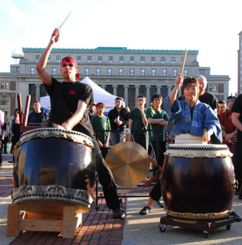

Stage
Matsuri 2010's stage performances are back and they are bigger and better than ever! Featuring returning groups such as CU Kendo Club, CU Teacher's College Taiko Society, Uzuhi, and 10tecomai as well as some
new performances by The Japanese Folk Dance Institute directed by Momo Suzuki and Sawai Koto Academy directed by Masayo Ishigure, the stage performances
will showcase a cross section of traditional as well as contemporary Japanese Culture. The sounds of the shamisen and taiko drum beats integrated with
the movements of the folk dances will surely make you feel as if you were in Japan.
Returning once again to Matsuri, the CU Kendo Club will showcase
some of their best moves and will amaze you with with their cool techniques with their shinai! Watch as they perform their formations and battle each other!
TAIKO is Japanese drums. Drums have a long and significant history in Japan. Thanks to the Taiko Society
at CU's Teacher's College, you can see first hand the exhiliration of Japanese taiko. Not for the weak of heart...
CJS President Kate Schultz will give us her thoughts on Matsuri and highlight the fun activities and booths at Matsuri 2010. The Japanese Folk Dance Institute of New York, founded by Momo Suzuki, has been performing throughout the U.S. since 1992.
Though the medium of folk dance, they have introduced many to the culture, history and spirit of Japan. They maintain an extensive collection of authentic music, colorful costumes and props enabling them to perform traditional folk dances from all over Japan. The boisterous but delicate drum beats. Sawai Koto Ensemble was founded in 1992 in New York City
as a branch of the Sawai Koto Academy of Japan. Its repertoire
ranges from classical to contemporary koto music. The founder
of Sawai Koto Academy, Tadao Sawai is known as one of the
greatest players and composers of koto music in the 20th Century.
We will give our gracious thanks and support to all whom have made Matsuri 2010 possible. The body goes beyond words.
4:05pm - 4:30pm
Columbia University Kendo
4:30pm - 5:15pm
Columbia University Teacher's College Taiko Society
If you want to learn more, visit their website at http://www.tc.columbia.edu/students/taiko/.

5:15pm - 5:25pm
Opening Ceremony
5:25pm - 5:55pm
The Japanese Folk Dance Institute of New York
Check out their website at http://www.japanesefolkdance.org/index.htm.
6:00pm - 6:45pm
Uzuhi
The elegant but brave keyboard sounds.
The rageful and crazy guitar shouts.
The earnest and passionate vocal performances.
Notes can't form the power of their music.
Uzuhi's show crosses over races, sexes, ages, and any borders, and it
fascinates, bewitches, and leads anyone to the earnest impression.
What is the real happiness in the world?
The answer should be in their Music.
Uzuhi screams from their spirit,
"Music is not what we look at. Music is not what we listen to.
But Music is what we feel!!!"
Check our their myspace page at http://www.myspace.com/uzuhi.
6:55pm - 7:25pm
Sawai Koto Academy
The ensemble especially dedicate themselves to playing Tadao Sawai's
koto music. They have played many concerts in the New York Metropolitan
area, the eastern United States, Hawaii, Europa and South America.
The leader of the NY Ensemble, Ms.Masayo Ishigure, has been teaching
koto and shamisen in New York, Washington DC and at Wesleyan University in Connecticut since 1992.
Please visit the Sawai Koto Academy's website at http://masayo-koto.home.att.net/academy.html.
7:25pm - 7:30pm
Closing Ceremony
7:30pm - 8:00pm
10Tecomai
It is neither a full length novel nor a two hour theatrical play.
All is dedicated in a song that does not even last a mere five minutes.
There, lies an almost tragic, yet passionate expression of emotion.
Japanese culture and hundreds of other cultures
Our project's foundation is created when these meet.
It is based on a traditional yet contemporary dance form called Yosakoi.
While holding a prop called "Naruko" in both hands,
The dancers intensely and dramatically dance as the chanter's cryinstigates the piece.
Various expression is created when all of the above is combined.
"10tecomai", a Yosakoi Dance Project.
This dance won't stop.
This dance can't be stopped.
To find more about 10tecomai visit their webpage at http://www.10tecomai.com/.